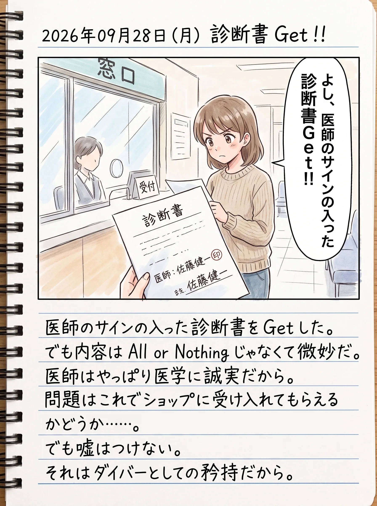

The road Orz passed by 2026 年 09 月
09 月 28 日 ( 月 )
Dive #223 リトレーニングに向けて診断書を Getした

通院している病院で、ダイビングのためのメディカルチェックシートを書いてもらった。DAN Japan のやつだ。
医師の署名も入ったので、今回ショップに提出するための書類として使うことができる。
ぼくはもう還暦を過ぎている。しかも協調運動障害で 3 級の手帳を持っている。
実はぼくは昨年 2025/09/10 日からダイビングを再開している。そのために昨年は "協調運動障害とスクーバダイビング 〜ボートダイビング実施のケーススタディ〜" という資料を作って現地サービスに予め送付して、必要と想定されるサポートをお願いしてもいた。その結果についてのレポートも、同資料にまとめている。
ショップに受け入れてもらうこと、そしてぼく自身が再び海の中に戻るのに必要だと考えて、その資料を作り込んだ。自分の今の状態を客観的に評価し、事故、インシデント、ヒヤリハットを排除するのに必要な、考えられる全ての想定と対策をまとめた。
去年はボートダイブを想定してありとあらゆる対策を考えた。
そして今年はビーチだ。ビーチダイブのために今年は "協調運動障害とスクーバダイビング 〜ビーチダイビング編〜" という資料をまとめているところだ。
こんな資料をまとめる理由は簡単だ。還暦を過ぎていて、しかも障害まであるぼくには、ぼくの状態をショップに伝える責任、事故を起こさない責任、インシデントを起こさない責任、ヒヤリハットを起こさない責任があるからだ。
これは本来、障がいがあろうとなかろうと、シニアであろうとなかろうと、認定されたダイバーであるなら、だれもが持たねばならない責任でありダイバーとしての矜持だ。
もちろん現実には舞台は海であり、ダイビングである以上、地上と違って条件は良くない。人はミスる、自分もミスる、機材は壊れる、認知も壊れる、海は危険。それは永遠に変わらない。
だけれども、もしぼくが事故になりでもしたら、ぼくを受け入れてくれたショップ、ショップオーナー、インストラクター、その店のスタッフはただでは済まなくなる。
ぼくは、彼ら、彼女らの人生を絶対に壊してはならない。
それがダイバーとしてのぼくに課せられた責任だ。
だから必要なことは、ぼくの責任ですべてやる。想定する。対処を考える。
それが C カードを持つダイバーとしてのぼくの矜持だから。
- Category :
- #Records of Orz's Road
- #ダイビング
- #スクーバダイビング
- #リトレーニング
- #認定ダイバーとしての矜持